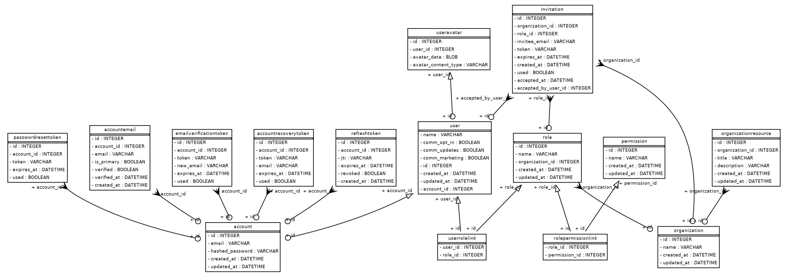

Customization
Development workflow
Dependency management with uv
The project uses uv to manage dependencies:
- Add new dependency:
uv add <dependency> - Add development dependency:
uv add --dev <dependency> - Remove dependency:
uv remove <dependency> - Update lock file:
uv lock - Install all dependencies:
uv sync - Install only production dependencies:
uv sync --no-dev - Upgrade dependencies:
uv lock --upgrade
IDE configuration
If you are using VSCode or Cursor as your IDE, you will need to select the uv-managed Python version as your interpreter for the project. Go to View > Command Palette, search for Python: Select Interpreter, and select the Python version labeled ('.venv':venv).
If your IDE does not automatically detect and display this option, you can manually select the interpreter by selecting “Enter interpreter path” and then navigating to the .venv/bin/python subfolder in your project directory.
Extending the template
The routers/core/ and utils/core/ directories contain the core backend logic for the template.
Your custom Python backend code should go primarily in the routers/app/ and utils/app/ directories.
For the frontend, you will also need to develop custom Jinja2 templates in the templates/ folder and add custom static assets in static/.
Testing
The project uses Pytest for unit testing. It’s highly recommended to write and run tests before committing code to ensure nothing is broken!
The following fixtures, defined in tests/conftest.py, are available in the test suite:
engine: Creates a new SQLModel engine for the test database.set_up_database: Sets up the test database before running the test suite by dropping all tables and recreating them to ensure a clean state.session: Provides a session for database operations in tests.clean_db: Cleans up the database tables before each test by deleting all entries in thePasswordResetToken,EmailUpdateToken,User,Role,Organization, andAccounttables.test_account: Creates a test account with a predefined email and hashed password.test_user: Creates a test user in the database linked to the test account.auth_client: Provides aTestClientinstance with access and refresh token cookies set, overriding theget_sessiondependency to use thesessionfixture.unauth_client: Provides aTestClientinstance without authentication cookies set, overriding theget_sessiondependency to use thesessionfixture.test_organization: Creates a test organization for use in tests.
To run the tests, use these commands:
- Run all tests:
uv run pytest - Run tests in debug mode (includes logs and print statements in console output):
uv run pytest -s - Run particular test files by name:
uv run pytest <test_file_name> - Run particular tests by name:
uv run pytest -k <test_name>
Type checking with ty
The project uses type annotations and ty for static type checking. To run ty, use this command from the root directory:
uv run ty check .We find that static type checking is an enormous time-saver, catching many errors early and greatly reducing time spent debugging unit tests. However, note that it requires you type annotate every variable, function, and method in your code base, so taking advantage of it requires a lifestyle change!
Developing with LLMs
The .cursor/rules folder contains a set of AI rules for working on this codebase in the Cursor IDE. The documentation site also publishes llms.txt and llms-full.txt for easy downloading and embedding for RAG.
Application architecture
Hybrid PRG + HTMX pattern
In this template, we use FastAPI to define the “API endpoints” of our application. An API endpoint is simply a URL that accepts user requests and returns responses. When a user visits a page, their browser sends what’s called a “GET” request to an endpoint, and the server processes it (often querying a database), and returns a response (typically HTML). The browser renders the HTML, displaying the page.
We also create POST endpoints, which accept form submissions so the user can create, update, and delete data in the database. This template uses a hybrid Post-Redirect-Get (PRG) + HTMX approach for POST requests:
- Non-HTMX (PRG): When a form is submitted without HTMX, the server processes the data and returns a
303 See Otherredirect to a GET endpoint, which re-renders the full page with updated data. - HTMX: When HTMX submits the same form, the server detects the
HX-Request: trueheader and instead returns a200HTML partial that HTMX swaps into the relevant part of the page — no full-page reload needed.
Both paths use the same POST route URLs and form field contracts. (See Architecture for more details.)
File structure
- FastAPI application entry point and homepage GET route:
main.py - Template FastAPI routes:
routers/core/- Account and authentication endpoints:
account.py - User profile management endpoints:
user.py - Organization management endpoints:
organization.py - Role management endpoints:
role.py - Dashboard page:
dashboard.py - Static pages (e.g., about, privacy policy, terms of service):
static_pages.py
- Account and authentication endpoints:
- Custom FastAPI routes for your app:
routers/app/ - Jinja2 templates:
templates/ - Static assets:
static/ - Unit tests:
tests/ - Test database configuration:
docker-compose.yml - Template helper functions:
utils/core/- Auth helpers:
auth.py - Database helpers:
db.py - FastAPI dependencies:
dependencies.py - Enums:
enums.py - Image helpers:
images.py - Database models:
models.py
- Auth helpers:
- Shared helper functions:
utils/- HTMX request detection:
htmx.py
- HTMX request detection:
- Custom template helper functions for your app:
utils/app/ - Exceptions:
exceptions/- HTTP exceptions:
http_exceptions.py - Other custom exceptions:
exceptions.py
- HTTP exceptions:
- Environment variables:
.env.example,.env - CI/CD configuration:
.github/ - Project configuration:
pyproject.toml - Documentation:
- README:
README.md - Website source:
user_guide/ - Configuration:
great-docs.yml+_environment
- README:
- Rules for developing with LLMs in Cursor IDE:
.cursor/rules/
Most everything else is auto-generated and should not be manually modified.
Backend
Code conventions
The GET route for the homepage is defined in the main entry point for the application, main.py. The entrypoint imports router modules from the routers/core/ directory (for core/template logic) and routers/app/ directory (for app-specific logic). In CRUD style, the core router modules are named after the resource they manage, e.g., account.py for account management. You should place your own endpoints in routers/app/.
We name our GET routes using the convention read_<name>, where <name> is the name of the resource, to indicate that they are read-only endpoints that do not modify the database. In POST routes that modify the database, you can use the get_session dependency as an argument to get a database session.
Routes that require authentication generally take the get_authenticated_account dependency as an argument. Unauthenticated GET routes generally take the get_optional_user dependency as an argument. Routes that should only be seen by unauthenticated users (e.g., login, register) use the require_unauthenticated_client dependency, which automatically redirects authenticated users to the dashboard. Routes that require re-verification of credentials (e.g., account deletion) use the get_verified_account dependency, which wraps get_authenticated_account with an additional email/password check.
Context variables
Context refers to Python variables passed to a template to populate the HTML. In a FastAPI GET route, we can pass context to a template using the templates.TemplateResponse method, which takes the request and any context data as arguments. For example:
@app.get("/welcome")
async def welcome(request: Request):
return templates.TemplateResponse(
request,
"welcome.html",
{"username": "Alice"}
)In this example, the welcome.html template will receive two pieces of context: the user’s request, which is always passed automatically by FastAPI, and a username variable, which we specify as “Alice”. We can then use the {{ username }} syntax in the welcome.html template (or any of its parent or child templates) to insert the value into the HTML.
Email templating
Password reset and other transactional emails are also handled through Jinja2 templates, located in the templates/emails directory. The email templates follow the same inheritance pattern as web templates, with base_email.html providing the common layout and styling.
Here’s how the default password reset email template looks:

The email templates use inline CSS styles to ensure consistent rendering across email clients. Like web templates, they can receive context variables from the Python code (such as reset_url in the password reset template).
Server-side form validation
Pydantic is used for data validation and serialization. It ensures that the data received in requests meets the expected format and constraints. Pydantic models are used to define the structure of request and response data, making it easy to validate and parse JSON payloads.
If a user-submitted form contains data that has the wrong number, names, or types of fields, Pydantic will raise a RequestValidationError, which is caught by middleware and converted into an HTTP 422 error response.
Middleware exception handling
Middlewares—which process requests before they reach the route handlers and responses before they are sent back to the client—are defined in main.py. They are commonly used in web development for tasks such as error handling, authentication token validation, logging, and modifying request/response objects.
This template uses middlewares exclusively for global exception handling; they only affect requests that raise an exception. This allows for consistent error responses and centralized error logging. Middleware can catch exceptions raised during request processing and return appropriate HTTP responses.
Middleware functions are decorated with @app.exception_handler(ExceptionType) and are executed in the order they are defined in main.py, from most to least specific.
Here’s a middleware for handling the PasswordValidationError exception, which returns a toast partial for HTMX requests or a full error page for non-HTMX requests:
from utils.core.htmx import is_htmx_request
@app.exception_handler(PasswordValidationError)
async def password_validation_exception_handler(request: Request, exc: PasswordValidationError):
if is_htmx_request(request):
return templates.TemplateResponse(
request,
"base/partials/toast.html",
{"message": exc.detail, "level": "danger"},
status_code=422,
)
return templates.TemplateResponse(
request,
"errors/validation_error.html",
{
"status_code": 422,
"errors": {"error": exc.detail}
},
status_code=422,
)Database configuration and access with SQLModel
SQLModel is an Object-Relational Mapping (ORM) library that allows us to interact with our PostgreSQL database using Python classes instead of writing raw SQL. It combines the features of SQLAlchemy (a powerful database toolkit) with Pydantic’s data validation.
Models and relationships
Core database models are defined in utils/core/models.py. Each model is a Python class that inherits from SQLModel and represents a database table. The key core models are:
Account: Represents a user account with email and password hashUser: Represents a user profile with details like name and avatar; the email and password hash are stored in the relatedAccountmodelOrganization: Represents a company or teamRole: Represents a set of permissions within an organizationPermission: Represents specific actions a user can perform (defined by ValidPermissions enum)PasswordResetToken: Manages password reset functionality with expirationEmailUpdateToken: Manages email update confirmation functionality with expiration
Two additional models are used by SQLModel to manage many-to-many relationships; you generally will not need to interact with them directly:
UserRoleLink: Maps users to their roles (many-to-many relationship)RolePermissionLink: Maps roles to their permissions (many-to-many relationship)
Here’s an entity-relationship diagram (ERD) of the current core database schema, automatically generated from our SQLModel definitions:

To extend the database schema, define your own models in utils/app/models.py and import them in utils/core/db.py to make sure they are included in the metadata object in the create_all function.
Example application data model
The template ships with an illustrative data model, OrganizationResource, in utils/app/models.py. This model demonstrates how to create an organization-scoped database table and is used by the dashboard to display example resources. It is meant to be replaced with your own application-specific models.
To replace it:
- Edit
utils/app/models.py— removeOrganizationResourceand define your own SQLModel table classes. Any table class defined in this file will be automatically created in the database on startup. - Update
routers/core/dashboard.py— replace theOrganizationResourcequery and template context with your own data. - Update
templates/dashboard/index.html— replace the example resource list with your own application UI. - Optionally add new permission values to
AppPermissionsinutils/app/enums.pyif your models need custom permission checks. These are automatically registered alongside the coreValidPermissionsduring database setup.
Database helpers
Database operations are facilitated by helper functions in utils/core/db.py (for core logic) and utils/app/ (for app-specific helpers). Key functions in the core utils include:
set_up_db(): Initializes the database schema and default data (which we do on every application start inmain.py)get_connection_url(): Creates a database connection URL from environment variables in.envget_session(): Provides a database session for performing operations
To perform database operations in route handlers, inject the database session as a dependency (from utils/core/db.py):
@app.get("/users")
async def get_users(session: Session = Depends(get_session)):
users = session.exec(select(User)).all()
return usersThe session automatically handles transaction management, ensuring that database operations are atomic and consistent.
There is also a helper method on the User model that checks if a user has a specific permission for a given organization. Its first argument must be a StrEnum value (either from ValidPermissions in utils/core/enums.py or AppPermissions in utils/app/enums.py), and its second argument must be an Organization object or an int representing an organization ID:
from utils.core.enums import ValidPermissions
from utils.app.enums import AppPermissions
# Check a core permission
user.has_permission(ValidPermissions.CREATE_ROLE, organization)
# Check an app-specific permission
user.has_permission(AppPermissions.READ_ORGANIZATION_RESOURCES, organization)Core permissions used by the template’s built-in features are defined in ValidPermissions (utils/core/enums.py). To add your own app-specific permissions, define them in AppPermissions (utils/app/enums.py). Both enum types are automatically registered in the database during setup and work interchangeably with User.has_permission().
Cascade deletes
Cascade deletes (in which deleting a record from one table deletes related records from another table) can be handled at either the ORM level or the database level. This template handles cascade deletes at the ORM level, via SQLModel relationships. Inside a SQLModel Relationship, we set:
sa_relationship_kwargs={
"cascade": "all, delete-orphan"
}This tells SQLAlchemy to cascade all operations (e.g., SELECT, INSERT, UPDATE, DELETE) to the related table. Since this happens through the ORM, we need to be careful to do all our database operations through the ORM using supported syntax. That generally means loading database records into Python objects and then deleting those objects rather than deleting records in the database directly.
For example,
session.exec(delete(Role))will not trigger the cascade delete. Instead, we need to select the role objects and then delete them:
for role in session.exec(select(Role)).all():
session.delete(role)This is slower than deleting the records directly, but it makes many-to-many relationships much easier to manage.
Frontend
HTML templating with Jinja2
To generate the HTML pages to be returned from our GET routes, we use Jinja2 templates. Jinja2’s hierarchical templates allow creating a base template (templates/base.html) that defines the overall layout of our web pages (e.g., where the header, body, and footer should go). Individual pages can then extend this base template. We can also template reusable components that can be injected into our layout or page templates.
With Jinja2, we can use the {% block %} tag to define content blocks, and the {% extends %} tag to extend a base template. We can also use the {% include %} tag to include a component in a parent template. See the Jinja2 documentation on template inheritance for more details.
Styling
The frontend ships its own small, self-contained CSS framework in static/css/styles.css — there is no Bootstrap dependency and no build step (no Node.js, Sass, or gulp required). The stylesheet is plain CSS and can be edited directly. It provides:
- A design-token layer (colors, typefaces, radii, shadows, spacing) declared as CSS custom properties in the
:rootblock. - A reboot and base typography.
- A small grid (
container,row,col-md-*,offset-md-*), the utility classes the templates use (spacing, flex, text, display), and the components they rely on (buttons, cards, navbar, dropdowns, forms, list groups, tables, badges, alerts, modals, toasts).
Interactive components — dropdowns, modals, the mobile navbar collapse, and toast dismissal — are powered by static/js/ui.js. It reads data-bs-toggle, data-bs-target, and data-bs-dismiss attributes and wires everything through document-level event delegation, so behavior keeps working for markup that htmx swaps in after the initial load. ui.js is loaded with defer in <head> (outside <body>) so it is never re-processed during hx-boost body swaps.
Re-theming
To change the look of the whole app, edit the design tokens at the top of static/css/styles.css:
:root {
/* Type */
--font-display: "Space Grotesk", system-ui, sans-serif;
--font-body: "IBM Plex Sans", system-ui, sans-serif;
--font-mono: "IBM Plex Mono", ui-monospace, monospace;
/* Palette */
--primary: #0e7c7b;
--primary-strong: #0a5f5e;
--slate: #1c2a30;
--success: #0f7a52;
--danger: #b42318;
--warning: #b45309;
/* Shape */
--radius: 0.55rem;
--shadow: 0 12px 30px -20px rgba(16, 24, 28, 0.35);
/* ... */
}Because every component derives its colors, fonts, radii, and shadows from these variables, changing them re-themes the entire interface.
Typefaces are loaded from Google Fonts in templates/base.html. To swap fonts, update the <link> to Google Fonts (or self-host the files under static/) and point the --font-* tokens at the new families.
Page-specific styles
static/css/styles.css is the framework; keep page- or component-specific rules in static/css/extras.css, which is loaded after it. The landing-page hero and the responsive layout rules for the dashboard, profile, and organization pages live there.
Client-side form validation
While this template includes comprehensive server-side validation through Pydantic models and custom validators, it’s important to note that server-side validation should be treated as a fallback security measure. For HTMX requests, validation errors are surfaced as a toast notification without a page reload. For non-HTMX requests, they render the validation_error.html full-page error template. In either case, seeing a validation error means client-side validation has failed to catch invalid input before it reached the server.
Best practices dictate implementing thorough client-side validation via JavaScript and/or HTML input element pattern attributes to:
- Provide immediate feedback to users
- Reduce server load
- Improve user experience by avoiding round-trips to the server
- Prevent malformed data from ever reaching the backend
Server-side validation remains essential as a security measure against malicious requests that bypass client-side validation, but it should rarely be encountered during normal user interaction. See templates/authentication/register.html for a client-side form validation example involving both JavaScript and HTML regex pattern matching.